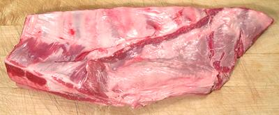

While in position this cut is anatomically equivalent to pork spare ribs, it is not otherwise equivalent. Those who have chosen a religion that forbids pig will mercifully never know how severely they are being punished. This cut, from a very small lamb, was 17-1/4 inches long, 6 inches wide and weighed 2.4 pounds.
The non-bony parts, including the strip of diafragm, are a bit tough, and covered on both sides with even tougher membranes which are not removable - edible only by the determined. Except for the front few the ribs are not particularly meaty but are reasonably tasty if browned well on a grill or in a broiler.
The cartilage is sparce and quite unlike that of the pig. While pig cartilage is smooth, crunchy and enjoyable, that of the lamb has the gritty texture of bone, and tastes like bone as well, nearly inedible.
More on Lamb / Mutton Cuts.
 The photo to the left is a breast cut somewhat differently and from a much larger lamb. It was 13 inches long, 4-3/4 inches wide, weighed 2.0 pounds and was much thicker than the top photo specimen. I found this cut a lot tastier, no tougher, and more pleasant to eat than the one in the top photo, so I recommend selecting more mature lamb.